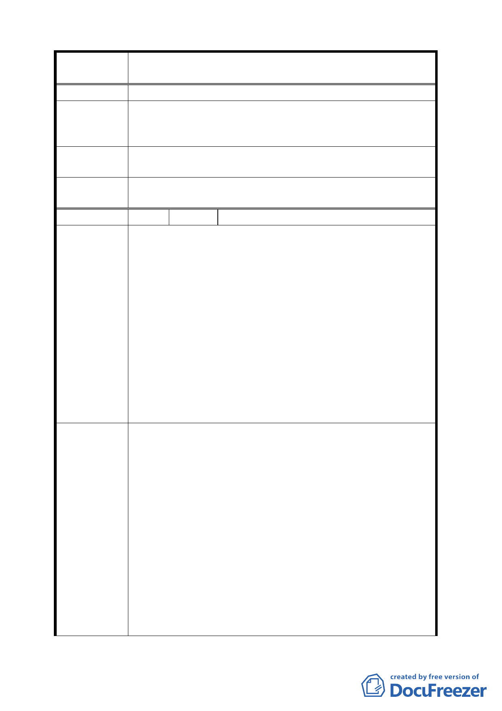

案
名
擬定臺北市中正區齊東街保存區及日式宿舍風貌保
存特定專用區細部計畫案
陳情理由
本案細部計畫書之事業及財務計畫表內所列日式宿舍風貌
建 議 辦 法 保存特定專用區開闢經費 16400 萬元，並未經所有權人同
意。
專案小組
審查結論
本計畫所列之開闢經費，請提出說明。
委員會決議
本計畫範圍內除四筆私有土地外，其餘皆屬公有土地，將
由文化局統一管理。
編 號 4 陳情人 褚陳寶貴女士（連署 140 人）
一、 強烈支持臺北市政府保存特定專用區變更計畫案，本
社區居民基於維護都市生態、歷史、文化之永續傳承
責任與態度，支持特定專用區之劃設、變更，以維持
日式宿舍群落與綠意交融的風貌，創造文化台北、健
康台北、永續台北的好典範。
二、 考量都市開發之公平性及景觀永續性，特定專用區內
陳情理由
私人用地開發應予必要的建築限制，以免出現「七矮
人與白雪公主」並立，公有地「供奉」私有地「獨霸」
的突兀現象。
三、 依都市經濟而言，串連周邊地區（包括華山創意園
區、齊東街歷史風貌保存區、孫運璿故居、李國鼎故
居等）為文化園區，可以歷史文化的魅力創造都市新
商機。
一、 透過建築形貌、空間紋理和植栽群落整體構成的地方
場所感，形塑具文化歷史特色之區域，相關規劃原則
及案例莫不以「都市生活的空間品質」為主軸，有好
品質的都市空間與公共設施的支撐，無形中減輕了市
民們負擔，健康問題和成本，療癒地方失落感造成的
精神創傷。
建議辦法
二、 依文化資產保存及相關法令規定，可給予私人用地一
定的補償或獎勵，開發利益並無損失。
三、 私人用地地主若積極配合特定專用區的劃設，進而與
後續整體保存規劃密切合作，政府行政單位應給予必
要的行政支援，如此不但創造三贏，還可將座落在「日
式宿舍風貌特定專用區」作為獨特賣點，成為臺北市
最奇特最富文化生態涵構意義的住宅！
四、 文化是新興的好主意，特別是串連成園區的文化規模
8